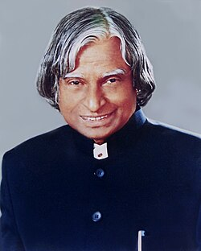

Dr. A.P.J. Abdul Kalam
1931–2015
Missile Man of India
A. P. J. Abdul Kalam was an Indian aerospace scientist and statesman who served as president of India from 2002 to 2007.Born in Rameswaram in Southern India, Kalam spent four decades as a scientist and science administrator, mainly at the Defence Research and Development Organisation and Indian Space Research Organisation and was intimately involved in India's civilian space programme and military missile development efforts.He was known as the "Missile Man of India" for his work on the development of ballistic missile and launch vehicle technology.He also played a pivotal organisational, technical, and political role in India's Pokhran-II nuclear tests in 1998.
Biographies
- Wings of Fire (1999) - with Arun Tiwari
- Turning Points: A Journey through Challenges (2012)
- My Journey: Transforming Dreams into Actions (2013)
- Mission India: A Vision for Indian Youth (2005)
- Beyond 2020: A Vision for Tomorrow’s India (2014)
- Indomitable Spirit (2006)
- Ignited Minds: Unleashing the Power within India (2002)